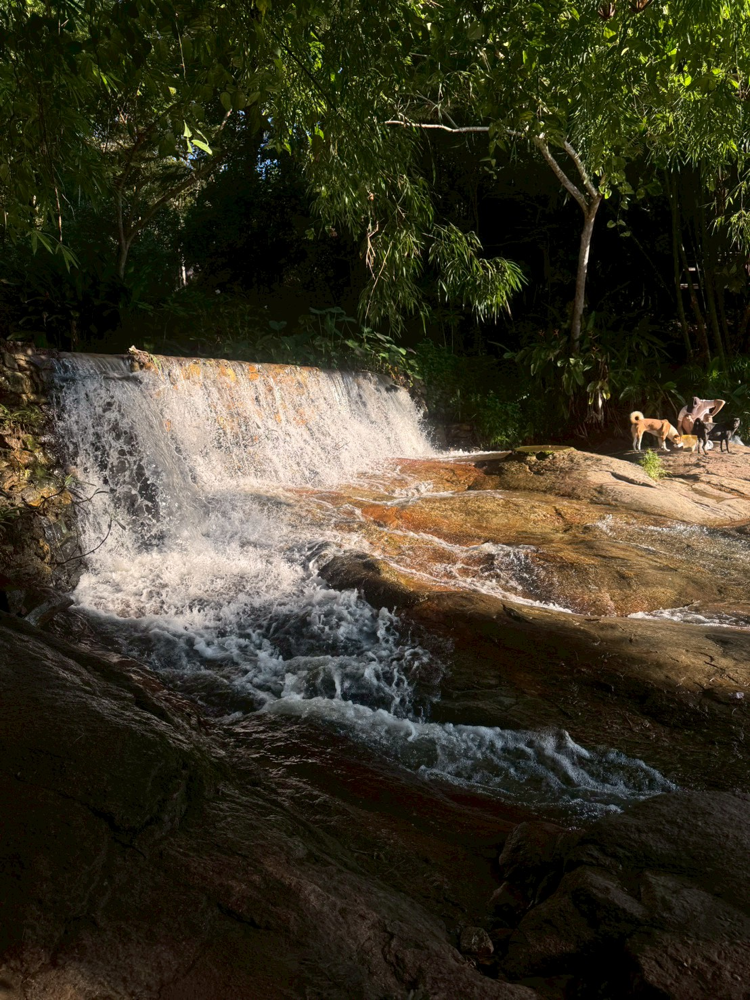
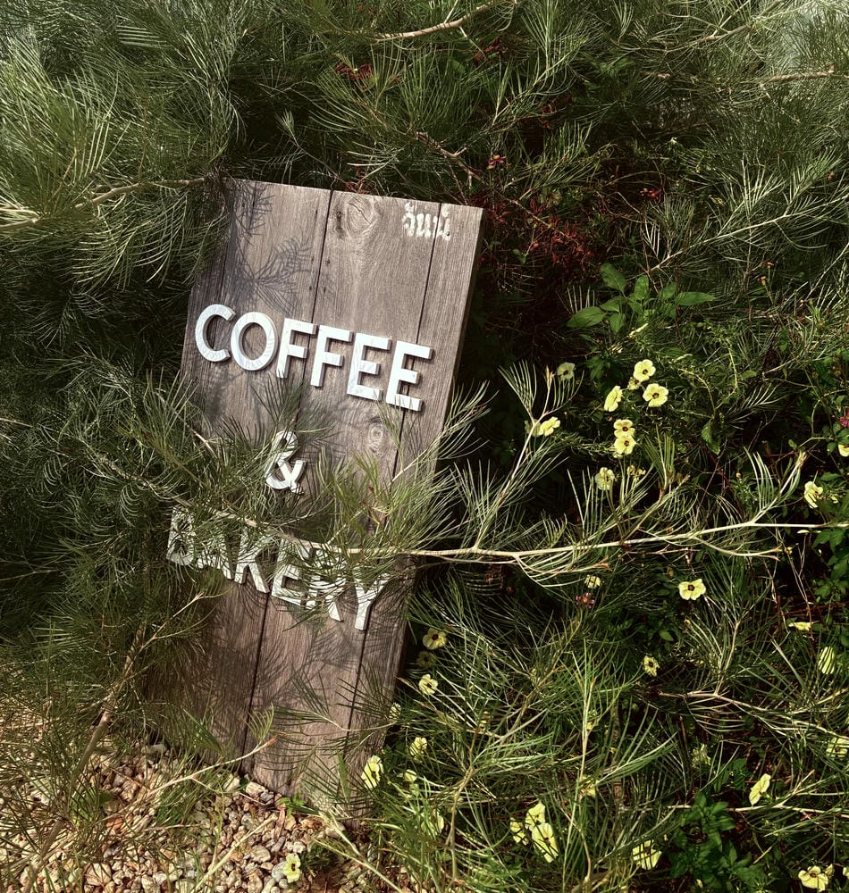

Explore nature, mountains, and cafés through my favorite places in Chiang Mai.
Let us recommend a place for you.

Some of my best memories in Chiang Mai come from hiking with my friends. Every trail has its own unique scenery, challenges, and unforgettable moments. In this blog, I'm sharing my three favorite hiking destinations that we've explored together, hoping they can inspire others to enjoy nature as much as we did.
View Details →
Some of my favorite memories in Chiang Mai come from exploring cafés and dessert shops with my friends. These are the places we enjoyed the most, with great drinks, tasty desserts, and cozy atmospheres.
View Details →